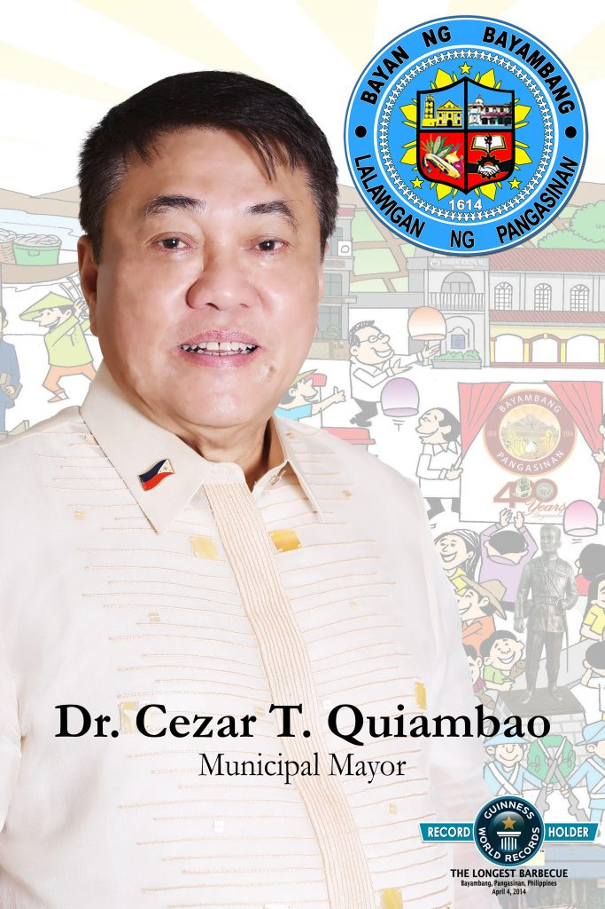

City Mayor
Mayor Dr. Cezar T. Quiambao
Mayor Dr. Cezar T. Quiambao

Date of Birth:
November 17, 1948
Place of Birth:
Bayambang, Pangasinan
Education:
Certified Public Accountant
Work Experience: Over 3 decades of executive experience in various industrial activities, infrastructure and development projects, information technology applications, management knowhow and corporate planning, and banking, finance and investments.
November 17, 1948
Place of Birth:
Bayambang, Pangasinan
Education:
Certified Public Accountant
Work Experience: Over 3 decades of executive experience in various industrial activities, infrastructure and development projects, information technology applications, management knowhow and corporate planning, and banking, finance and investments.
- Former Executive Vice-President of PT Green Timber Jaya, a leading timber company in Indonesia (1977)
- Former Chair and Chief Executive Officer of Strategic Alliance Development Corp.
- Former President and Chief Executive Officer of Stradcom Corp.
- 2008 Automated Elections of the Autonomous Region of Muslim Mindanao
- LTO-IT Stradcom project
- Land Registration Authority’s land titling computerization project
- Metro Manila Skyway project – a groundbreaking project worth USD514M and a pioneer in utilizing the Build, Own and Transfer (BOT) scheme between the government and private sector
- Put up the CSF Rural Bank of Bayambang to provide microfinancing programs that help small entrepreneurs
- Recipient of the prestigious Asna Award for Business (2014) given out by the provincial government of Pangasinan to select achievers